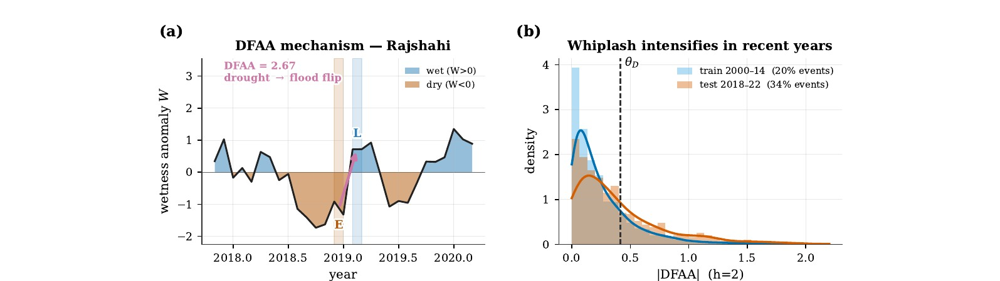
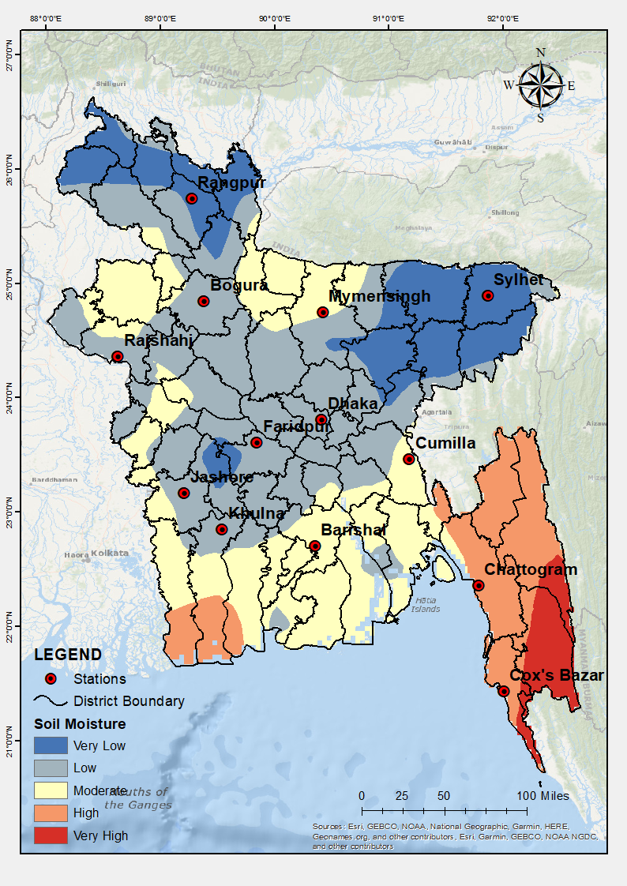
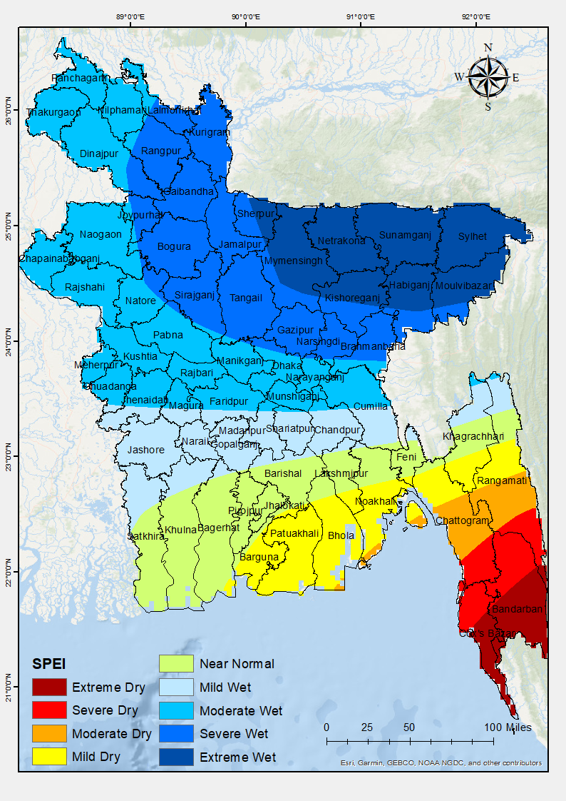
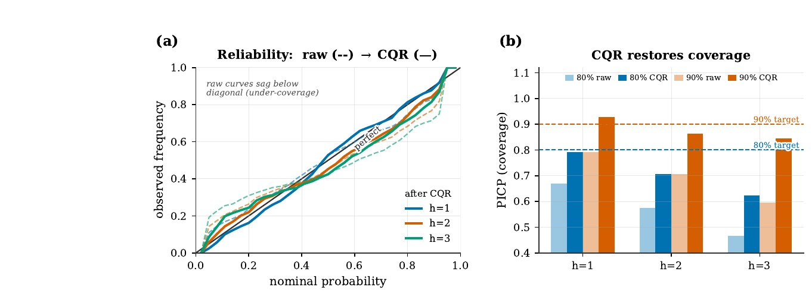

Earth-observation inputs
Monthly rainfall, temperature, soil moisture, and three-month SPEI at 13 stations from 2000 to 2022.
A probabilistic forecasting system for rapid shifts between drought and flood conditions, built from satellite Earth observation and station records across Bangladesh.

01 · Research question
Drought and flood warnings are usually produced as separate products. That division misses drought-flood abrupt alternation (DFAA): a rapid transition that can expose the same place to water deficit and excess within one season.
This study defines a monthly multivariate DFAA index from rainfall, soil-moisture, and SPEI anomalies. It forecasts the full probability distribution one to three months ahead, then applies conformalized quantile regression so the warning includes calibrated uncertainty.
02 · Analytical design
Monthly rainfall, temperature, soil moisture, and three-month SPEI at 13 stations from 2000 to 2022.
A wetness state combines standardized rainfall, soil moisture, and SPEI. The index scores transition direction and magnitude.
Gradient-boosted quantile regression and a QR-LSTM forecast ordered quantiles at three lead times.
Conformalized quantile regression adjusts interval coverage. Held-out stations test spatial transfer.
03 · Evidence base


04 · Results

Gradient-boosted quantile regression beat climatology at every lead and matched the physical water-balance benchmark on event discrimination. The QR-LSTM trailed the boosted model. Physics-guided features changed CRPS skill only marginally, so the paper reports that negative ablation result directly.
05 · Performance by lead
| Metric / model | 1 month | 2 months | 3 months |
|---|---|---|---|
| CRPS skill, GBQ | +0.094 | +0.122 | +0.162 |
| DTF ROC-AUC, GBQ | 0.670 | 0.745 | 0.819 |
| FTD ROC-AUC, GBQ | 0.780 | 0.769 | 0.746 |
| 90% coverage, raw GBQ | 0.791 | 0.707 | 0.596 |
| 90% coverage, GBQ + CQR | 0.928 | 0.863 | 0.844 |
06 · Interpretation
The calibrated intervals still under-cover at two- and three-month leads. The calibration years and the 2018–2022 test period are not fully exchangeable because recent alternations are more frequent and heavier-tailed.
Monthly aggregation can hide shorter reversals. Earth-observation products carry measurement uncertainty, and much of the predictive importance comes from the wetness state already observed at forecast origin.
The next operational step is adaptive recalibration on a moving window, followed by validation against independent drought and flood impact records.